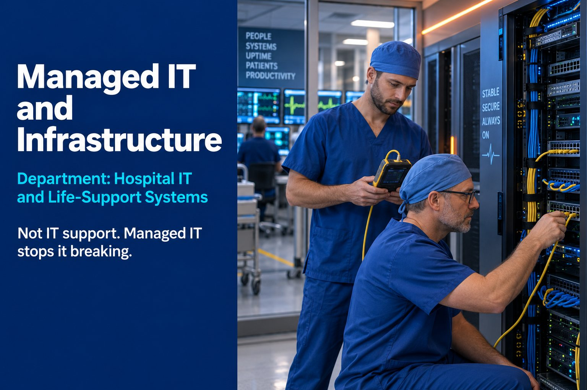

Core Infrastructure
Servers, networks, site Wi-Fi and user devices kept patched, monitored and documented.

Department: Hospital IT and Life-Support Systems
Your Cyber Essentials certificate is only true if the systems behind it are actually managed that way, every day, not just on assessment day.
Without managed infrastructure, a buyer assumes Cyber Essentials controls exist on paper but not in practice, unreliable systems during contract delivery, no real continuity plan if systems fail, inconsistent patching and endpoint protection and support dependent on one person's availability.
None of that may be true of you. It does not matter. In a tender, the assumption is what gets scored.
Auditors do not take the certificate's word for it. They ask to see the patch log, the backup test, the access list. If the systems on the ground do not match the claim on the certificate, the claim collapses.
This is not IT support. IT support is what you call when something breaks. Managed IT is what stops it breaking.
Servers, networks, site Wi-Fi and user devices kept patched, monitored and documented.
HMIs, engineering workstations and shop-floor PCs managed to the same standard as the office.
Microsoft 365, Azure and SharePoint structured properly, with backups encrypted and tested.
Helpdesk workflows, patch management and access control that stands up to an audit.
| Tender criterion | What this service contributes | Score effect |
|---|---|---|
| Operational Resilience | System uptime and reliability during contract delivery | Major |
| Cyber | Underpins Cyber Essentials control evidence | Major |
| Delivery | Reduces risk of service disruption during a live contract | Major |
| Compliance | Documented, managed systems support audit evidence | Moderate |
| Quality | Reliable systems support consistent process delivery | Moderate |
Whether your systems match what the certificate claims. That includes critical and high-risk security updates applied within 14 days of release, multi-factor authentication on cloud services, only supported software in use, and admin accounts kept separate from everyday ones. The patch log and the access list are the evidence.
The most common reasons are shop-floor or office PCs running unsupported operating systems, cloud accounts without multi-factor authentication, staff with admin rights they do not need, default passwords left on devices, and patches applied late. All of them are fixable, but they need to be fixed before the assessment, not during it.
Yes, if they can reach the internet. An old production PC running an unsupported version of Windows will fail the assessment unless it is upgraded, replaced, or properly separated so it falls outside the scope. Decide which route you are taking well before the assessment.
Sources: Cyber Essentials overview (NCSC)
Free briefing: Protecting the Production Line, what the 2026 cyber data means for UK manufacturers and their tenders (8-page PDF).
Reviewed by Rob Atkins, Founder & Principal Consultant, Your Best Solution Limited. Last updated .